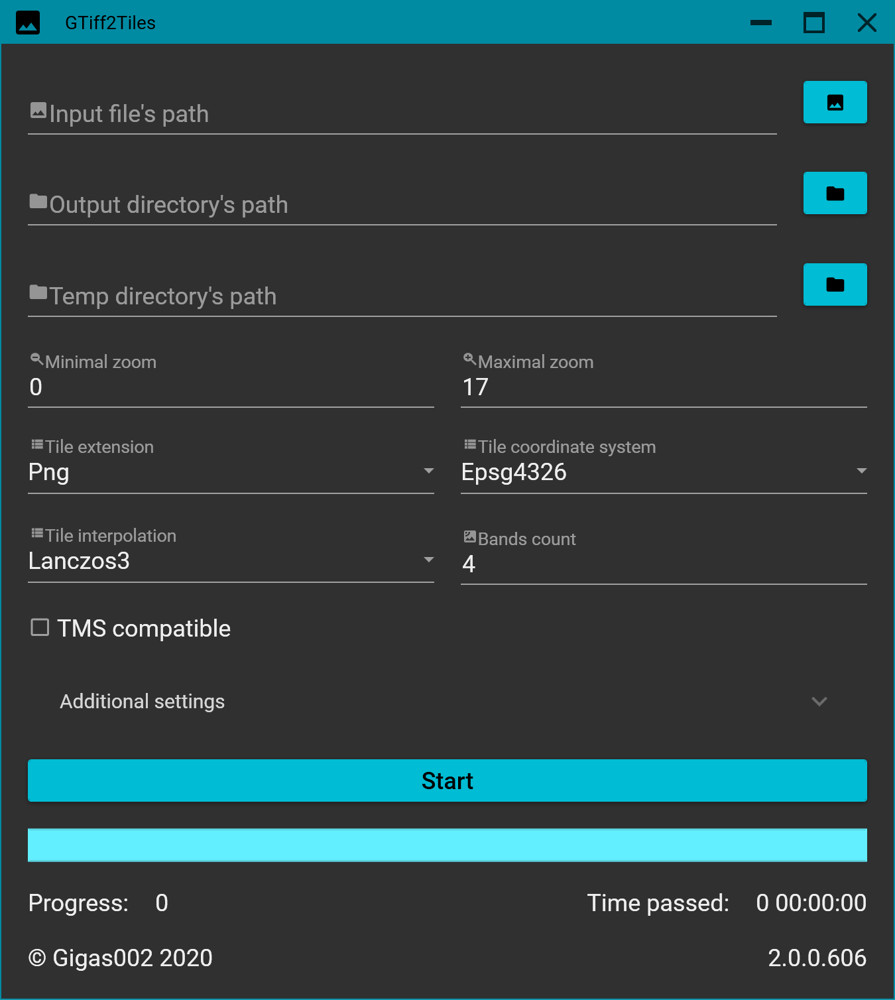

GTiff2Tiles.GUI
GTiff2Tiles.GUI is a simple GUI app, that implements methods from GTiff2Tiles.Core to create tiles. The app is available to download from GitHub Releases Page.
Supports only GeoTIFF as input data and creates geodetic or mercator tiles on output in tms or non-tms (Google maps like) structure. Any GeoTIFF (with less, than 5 bands) on input is supported, if it's not EPSG:4326 or EPSG:3857, it'll be converted to your selected target coordinate system and saved inside temp directory before cropping.
Requirements
Application runs only on Windows x64 (tested on Win 7 SP1+) operating system.
If you’re using Windows 7 SP1, you can experience weird error with GDAL package. It’s recommended to install KB2533623 to fix it. You can read about this Windows update on MSDN.
Build dependencies
- GTiff2Tiles.Core;
- Prism.DryIoc – 8.1.97;
- MaterialDesignColors – 2.1.4;
- MaterialDesignThemes – 4.9.0;
- MaterialDesignExtensions – 4.0.0-a02;
- MaxRev.Gdal.WindowsRuntime.Minimal – 3.7.0.100;
- NetVips.Native.win-x64 – 8.14.2;
Using

Besides writing args each time the program start, you can specify the default values for GUI args in settings.json file. Full example (with hardcoded default values) is following:
{
"InputFilePath": "",
"OutputDirectoryPath": "",
"TempDirectoryPath": "",
"MinZ": 0,
"MaxZ": 17,
"TileExtension": "png",
"CoordinateSystem": 4326,
"Interpolation": "lanczos3",
"BandsCount": 4,
"TmsCompatible": false,
"IsTmr": false,
"Theme": "dark",
"TileSideSize": 256,
"IsAutoThreads": true,
"ThreadsCount": 8,
"TileCache": 1000,
"Memory": 2147483648
}
All properties in settings.json can be null or file can even not exist: in this case the default settings will be used instead.
Args explanation:
- InputFilePath -- path to input GeoTIFF. Must have
.tifextension; - OutputDirectoryInfo -- path to output directory. Must be empty;
- TempDirectoryInfo -- path to temp directory. Timestamp
YYYYMMDDHHmmSSzzzdirectory will be created inside; - MinZ -- minimal zoom;
- MaxZ -- maximal zoom;
- TileExtension -- extension of ready tiles. Can be:
png,jpgorwebp; - CoordinateSystem -- coordinate system of ready tiles. Can be
4326or3857; - Interpolation -- interpolation of ready tiles. Can be:
nearest,linear,cubic,mitchell,lanczos2orlanczos3; - BandsCount -- number of bands in ready tiles. Can be in range
[1, 4]; - TmsCompatible -- are tiles tms compatible? Can be
falseortrue; - IsTmr -- do you want to create
tilemapresource.xml? Can befalseortrue; - Theme -- app theme. Can be
darkorlight; - TileSideSize -- size of tile's side.
int; - IsAutoThreads -- do you want to calculate threads automatically? Can be
trueorfalse; - ThreadsCount -- number of threads in case you've set
IsAutoThreadstofalse.int; - TileCache -- number of tiles to store in memory cache.
int; - Memory -- how big tiff to store in RAM.
long;